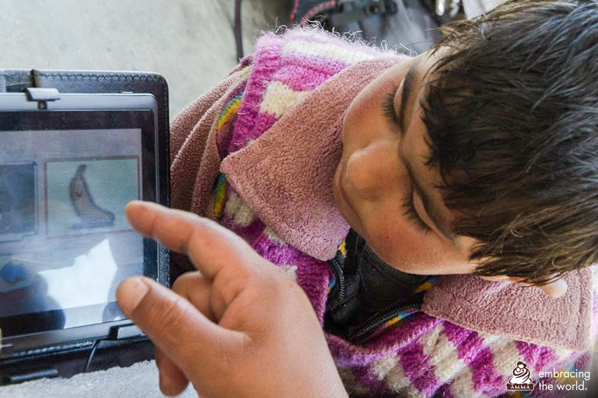
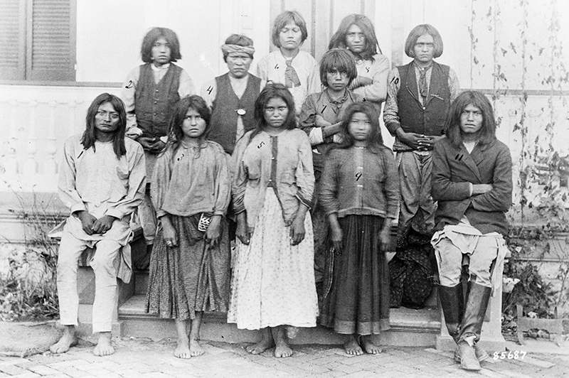
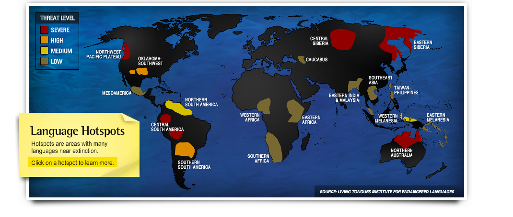

By Luciana Perez Uribe Guinassi
November 29, 2019
Almost 3 thousand out of the 7 thousand languages spoken worldwide are at risk of extinction
Heritage, it’s really interesting that you bring it up, said Anna Luisa Daigneault, Program Director at the Living Tongues Institute for Endangered Language.
LTIEL is a non-profit research institute focused on documenting endangered languages. They create Talking Dictionaries, which are oral dictionaries of languages, provide workshops and manage an Endangered Language hotspots map.
Caption: Living Tongues Insitute for Endangered Languages
learn more
Daigneault’s family is from Peru. Previously, both sides of her family spoke Quechua and one side spoke Aymara.
Quechua is a family of languages spoken by Indian peoples of Peru, Bolivia, Ecuador, Chile, and Argentina. Aymara is spoken in Bolivia, Peru, and northern Chile, says Merriam- Webster.
Her family no longer speaks Quechua and Aymara, they speak English and Spanish and identify as Peruvians, despite having indigenous roots.
“I always look at that as one of the many models of endangerment that can occur within various generations of a family...we have since lost our ancestral indigenous identity and language.”
Loss of languages is about how people perceive themselves, in history, space and lineage, says Daigneault.
Caption:Living Tongues Insitute for Endangered Languages
Almost 3 thousand out of the 7 thousand languages spoken worldwide are at risk of extinction. The majority of the languages at risk are spoken by indigenous populations who are often isolated politically and socially in the countries they live in, by geography, history, culture, languages and traditions, says UNESCO.
When a language goes dormant it means that the community has to some degree collapsed, which is indicative of other problems; economic inequality, political oppression, political violence, said Daniel Bögre Udell, co-founder and Executive Director of Wikitongues.
“When a language is revitalized, we're seeing the effects of equity," Udell said.
Udell and Frederico Andrade launched Wikitongues in 2014, a non-profit organization that aggregates videos of individuals speaking languages from around the world.
Wikitongues is the first public archive of languages in the world. Currently, Wikitongues is finalizing a relationship with the Library of Congress to store their research and resources.
Half of the world's languages could disappear in 80 years and upwards of 95% of languages around the world are underrepresented and under-documented. Having free access to video content of people speaking their language is good for educating the public about the scope and scale of linguistic diversity, Udell said.
“Technology is a double-edged sword, there is a good side and a bad side,” said Daigneault.

Caption: Embracing the world organization
It has been extremely beneficial to marginalized societies, such as people in the Amazon, she said. Technology allows them to get in touch with family members, navigate, send and receive money and overall just communicate.
But, in a changing society, people can lose their traditional life. Just because the community is modernizing, does not mean they have to lose their heritage. You can learn English and Spanish, and maintain your own language, said Daigneault.
As of 2018, 782 languages have gone extinct and currently 58% percent of languages (excluding extinct languages in the calculation) are either threatened, shifting, moribund, or nearly extinct, says Glottolog in its Agglomerated Endangerment Status.
Agglomerated Endangerement Satus
More than half of the worlds languages are endangered
Source: Data collected by Glottolog
Harald Hammarström, linguist and co-founder of Glottolog does not believe that it is possible to save most languages from extinction.
He thinks it's important to document these languages before they go extinct for scientific purposes and for the next generation of people from the ethnic groups whose parents would have spoken those languages.
In the United States languages are disappearing fast. 154 languages are extinct. Approximately 14% (not including extinct languages in the calculation) are not endangered.
While Hammarström is one of many aiming to catalog and document languages, metrics to define the health of a language and the success of a revitalization project are poor.
“It’s like a global network of every culture on the planet, and the reason the data is not great, is because when you think about what that looks like...it’s huge,” said Udell.
Glottolog aims to stick to the barebones and provide original sources when available, said Hammarström. He pinpointed that Ethnologue and UNESCO do not provide sources systematically.
Though data pinpoints towards rapid language extinction, some languages have made comebacks.
“The current situation is drastically different from when it was first measured in the 90s,” said Udell.
Before the ’90s, many governments would crackdown on the languages that were not the country’s dominant ones. With the advent of the internet to help spread language awareness and record languages, as well as changes in certain government’s policies, Udell believes today languages are faring better.

Caption: HISTORY
In the United States, it was not until 1978 with the passing of the Indian Child Welfare Act that Native American parents gained the legal right to deny their children’s placement in off-reservation schools.
“Some Native American parents saw boarding school education for what it was intended to be — the total destruction of Indian culture,” says the American Indian Relief Council.
In 2003, the federal government in Mexico amended the constitution that prohibited language discrimination in public schools. It approved the General Law of Linguistic Rights of the Indigenous Peoples.
Farther up north, the European Council adopted the European Charter for Regional or Minority Languages (1992) and the Framework Convention for the Protection of National Minorities, which came into effect in 1998.
Examples of governments ratifying policies to protect languages can be found around the world. A few cases of languages being revitalized are those of Tunica, Hebrew, Cornish and Catalan.
In recent months the news has flashed with headlines of wildfires, hurricanes, heat waves, droughts, biodiversity loss and more climate-induced issues.
“The past three years (2016-2018) have been historic, with the annual average number of billion-dollar disasters being more than double the long-term average,” says a report “2018's Billion Dollar Disasters in Context” by the National Oceanic and Atmospheric Administration.
The historic number of disasters means trouble not only for the economy of the country but for vulnerable populations and minorities who tend to be most affected by climate change.
Climate change, particularly environmental hazards and sudden-onset disasters, is expected to bring about significant changes in migration patterns throughout the developing world, says Assessing the Impact of Climate Change on Migration and Conflict by Social Dimensions of Climate Change.

Caption: Living Tongues Insitute for Endangered Languages
LTIEL’S language hotspot map pinpoints locations around the world that need action and should be the highest priority in planning future research projects and channeling funding streams.
“The hotspots are located in the Northwest Pacific Plateau, Central and South America, Central Siberia, Eastern Siberia and Northern Australia.
“(climate change) provokes refugee migrations...these communities who, for however long had a measure of cultural sovereignty no longer have it because they’re forced to relocate and settle in places where they have to assimilate,” said Udell
Rapid urbanization or economic reasons also rank high for communities displacement, Udell added.
While Amazonian people, as an example of vulnerable populations, are at the front lines of climate change, “ they are also extremely resilient and adaptive to changes in their climate. They might be better at surviving than us in the urban environment,” said Daigneault.
Tracking current climate effects on languages is difficult, said Udell, but he was confident that 20 years from now, research would show communities who had been negatively impacted by climate change.
This impact could be traced back to the breakdown of the Paris Agreement and Brazilian President, Jair Bolsonaro’s current policies regarding the Amazon forest, amongst other reasons, said Udell